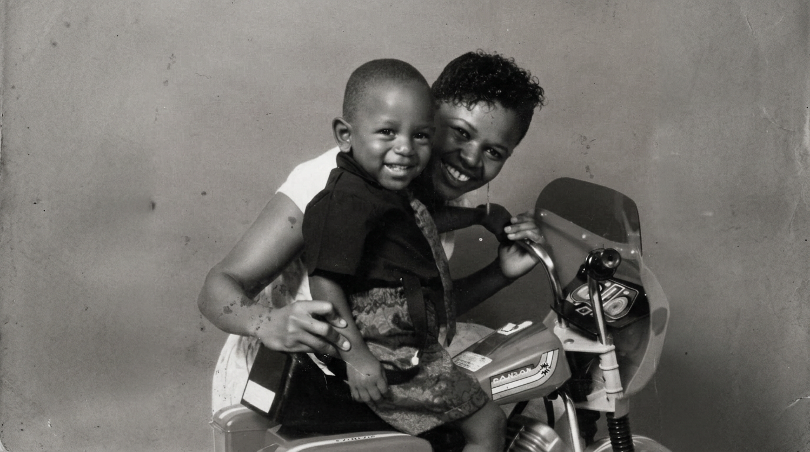
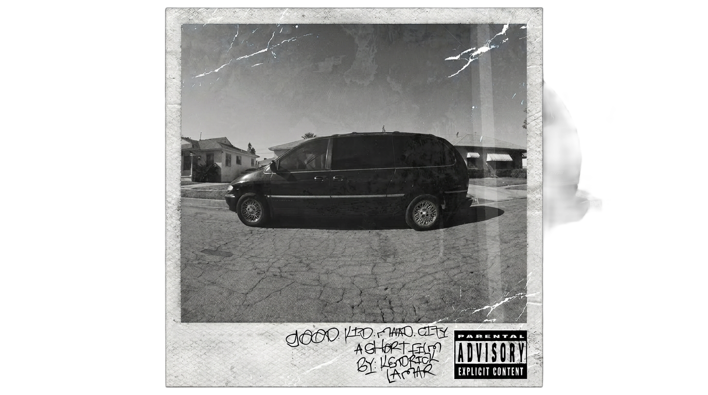
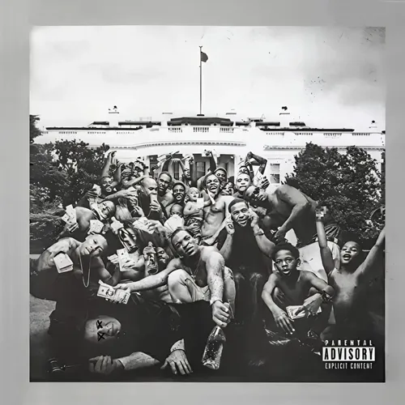
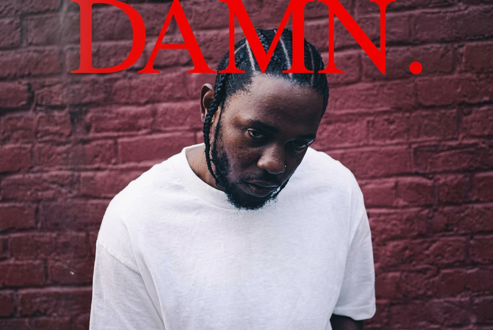
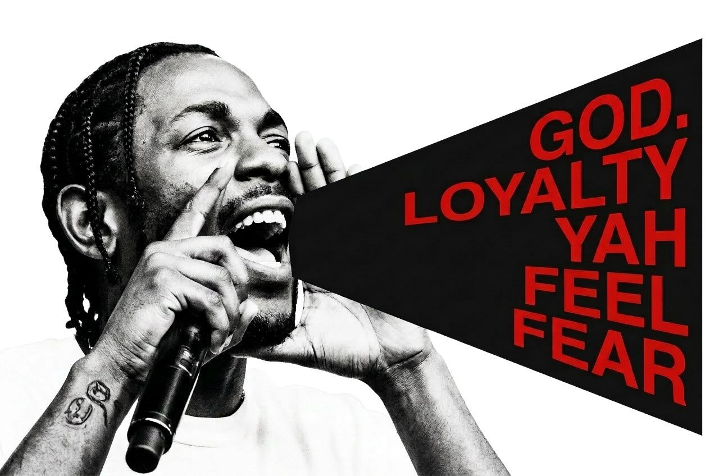
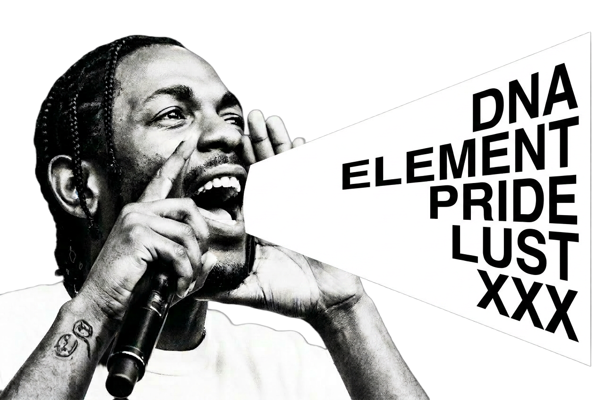
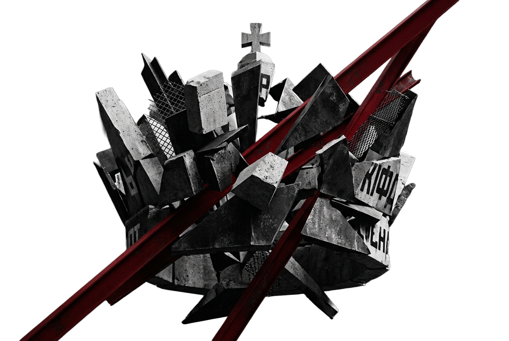
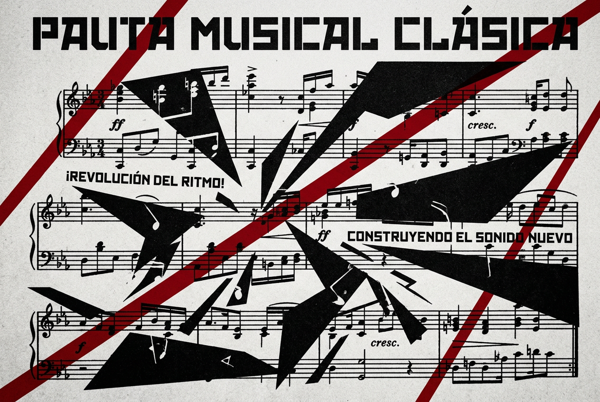

EL POETA
DE COMPTON
Cómo el hip-hop reescribió la historia.
La fortaleza de
la alta cultura
Durante casi un siglo, el Premio Pulitzer de Música funcionó como una fortaleza para premiar aquellos géneros que son considerados parte de la “alta sociedad”. Este premio fue exclusivamente reservado para compositores de música clásica y, más tarde, para grandes figuras del jazz.
En medio de este contexto de exclusión creció el compositor, productor y rapero Kendrick Lamar Duckworth. Su infancia transcurrió en Compton, California, un epicentro marcado durante los años 90 por la epidemia del crack y la brutalidad policial. Mientras su entorno empujaba a muchos hacia la fatalidad, Kendrick encontró en la escritura un refugio documental.
El hito que reescribió la historia ocurrió en 2018 con el lanzamiento de DAMN.. El jurado del Pulitzer le otorgó el máximo galardón, elogiando su "autenticidad vernácula y dinamismo rítmico". Ese día, Kendrick no solo recibió un premio; derribó un muro centenario.
El ascenso
del poeta
El observador
Crecer en Compton significó presenciar los disturbios de 1992 y la influencia de íconos del rap. Lanzando sus primeros mixtapes bajo el nombre de K-Dot, demostró una técnica vocal cruda, buscando su identidad narrativa y documentando la supervivencia urbana sin glorificar la violencia.

El cine sonoro
Con el lanzamiento de "Good Kid, M.A.A.D City", Kendrick se posiciona como un narrador omnisciente. Un álbum autobiográfico estructurado como un cortometraje que expone la presión de grupo y la redención en los barrios marginales.

El estallido cultural
"To Pimp a Butterfly" transformó a Kendrick en un líder social. Un disco lleno de jazz y spoken word que disecciona el racismo sistémico. Su canción "Alright" se convirtió en el himno de resistencia en las calles de todo el país.

La validación histórica
Lanza "DAMN.", una obra cruda sobre la dualidad humana (maldad vs debilidad). Abandona el jazz por el beatmaking puro. La academia se rinde ante él y le otorga el Premio Pulitzer, el triunfo definitivo de la poesía callejera en la alta cultura.

La encrucijada
A diferencia de sus obras anteriores, DAMN. abandona el análisis social para mirar violentamente hacia adentro. Es un juicio sobre la moralidad y la fe. El disco esconde un secreto interactivo: fue diseñado para ser escuchado en dos direcciones opuestas, revelando dos destinos trágicamente distintos.
Kendrick hace referencia a múltiples pasajes bíblicos, pero la base central ocurre en "FEAR." Un audio de su primo Carl le advierte sobre el pecado citando Deuteronomio 28:45, la clave para entender el destino de la obra.
La debilidad
(Track 1 al 14)
Escuchado en su orden oficial, presenciamos la historia de Kendrick el Débil. Un hombre que batalla contra la depresión y la fama, pero que se permite ser humillado por las pruebas de la vida para demostrar su fe. Lucha por desprenderse del ego y la arrogancia. Es un viaje luminoso, un despertar espiritual que culmina en redención.

La maldad
(Track 14 al 1)
Si reproduces el álbum en reversa, la historia se oscurece por completo. Conocemos a Kendrick el Malvado. Un hombre que cede ante la avaricia, la lujuria y la paranoia. Las canciones que antes sonaban a queja, ahora suenan a manifiesto violento. El final abrupto de la historia es el castigo divino: su muerte por elegir el camino del pecado y desobedecer a Dios.



El fin de un estigma
La lírica como documento
En los años 90, el género rap fue marginado violentamente, encadenado a temas raciales y asociado a la violencia de pandillas como los creeps y los bloods. Si bien sirvió de campo de batalla verbal entre figuras como Biggie y Tupac, el rap siempre fue más que solo brutalidad. Kendrick Lamar usó la voz de los olvidados desde sus inicios, no solo como "rap conciencia", sino como un documental crudo sobre la supervivencia en vecindarios peligrosos ignorados por el estado, enfrentando el racismo sistemático.
En DAMN, reescribió el arte enfocándose brutalmente en una perspectiva moralista y de prueba de fe, diseñando una obra que puede ser escuchada de arriba para abajo o viceversa. Cualquier género merece este premio, sin tener que ser blanco o considerado "sofisticado" como la música clásica o el jazz. El rap no es solo el estigma que siempre se le ha colocado; puede ser introspectivo e interesante.